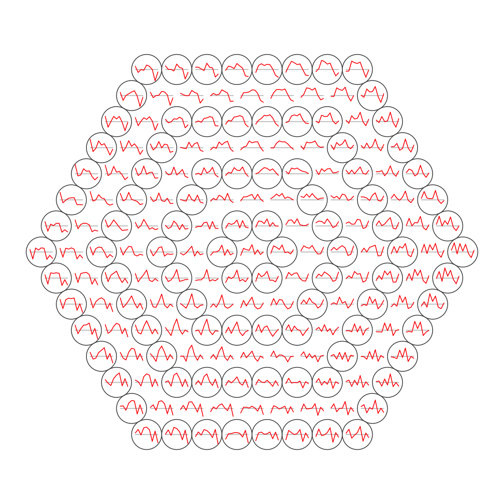
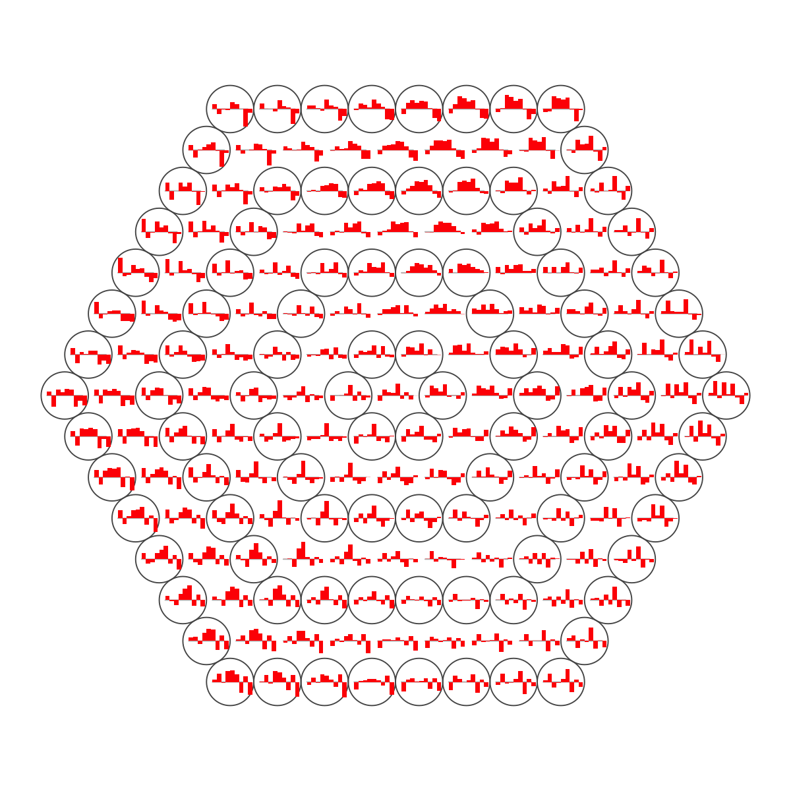
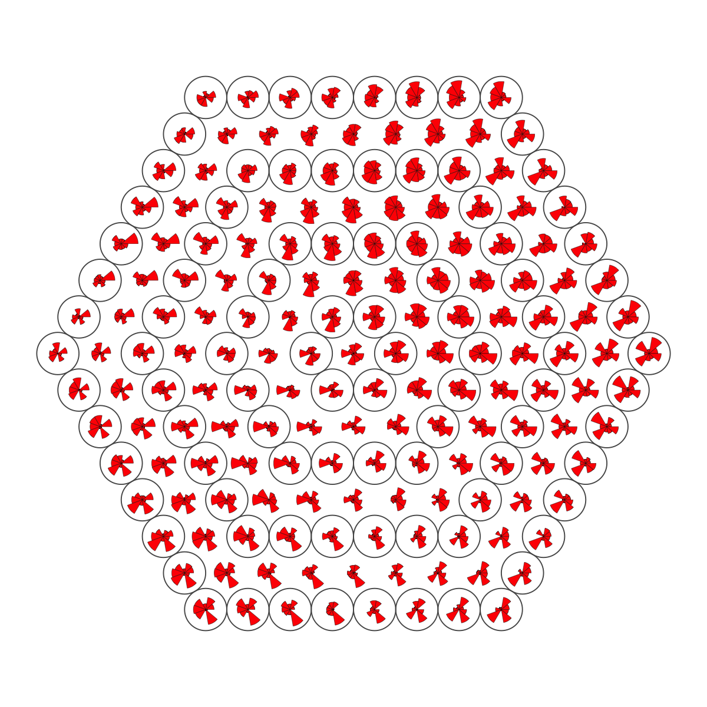
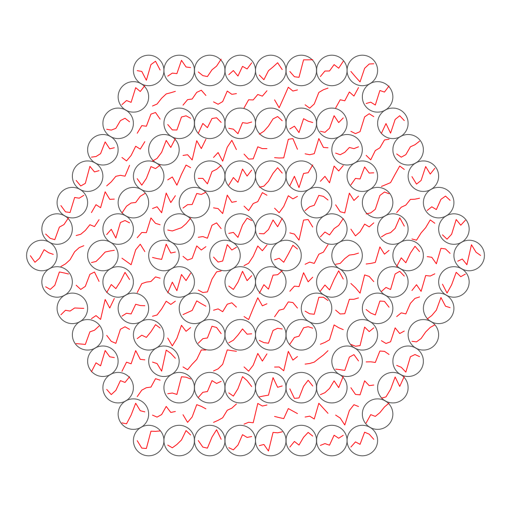
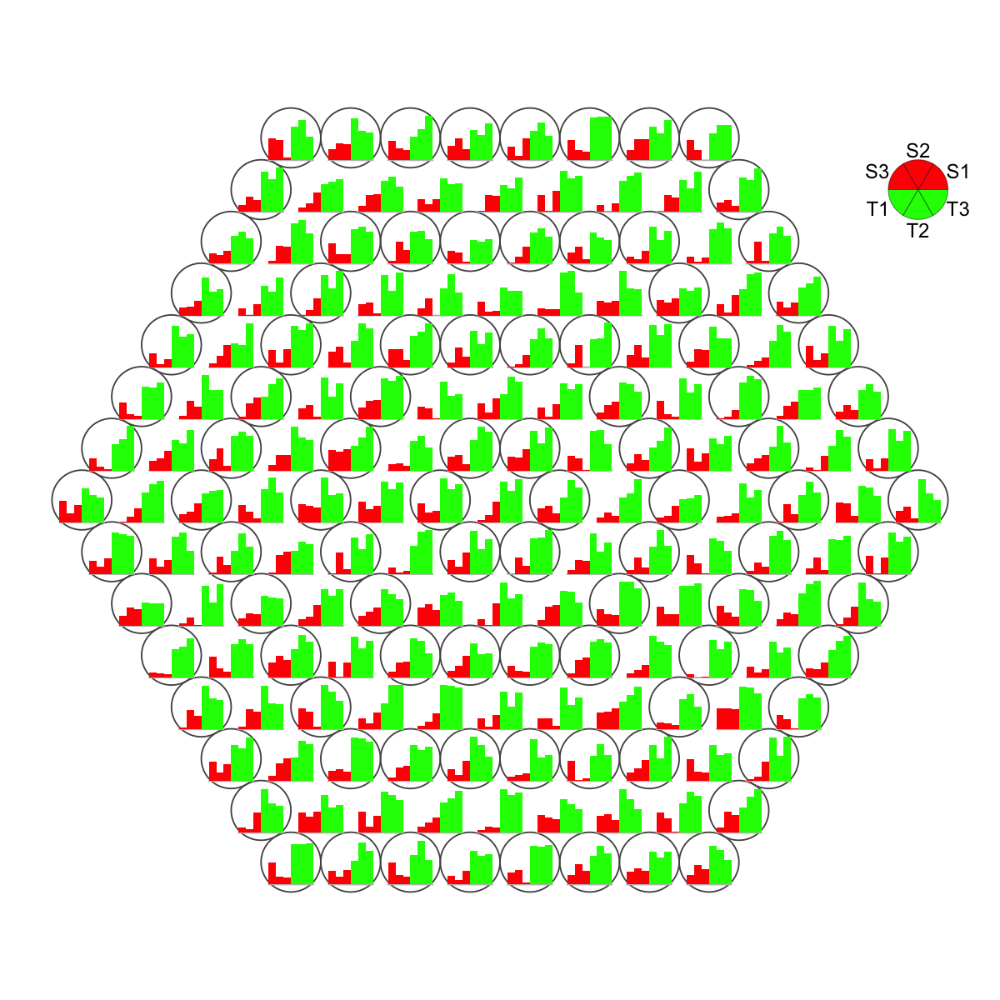
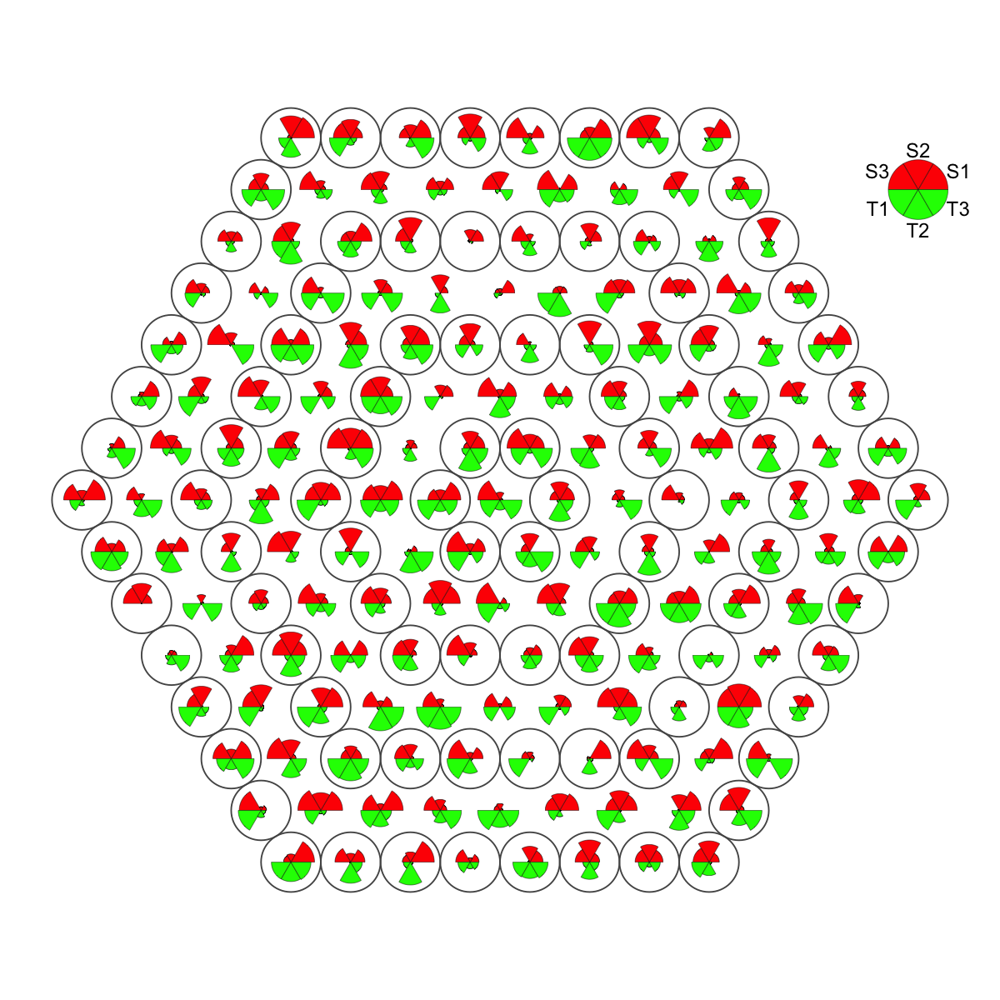

visHexPattern is supposed to codebook matrix or
input patterns within a supra-hexagonal grid.
visHexPattern(sObj, plotType = c("lines", "bars", "radars"), pattern = NULL, height = 7,
margin = rep(0.1, 4), colormap = c("customized", "bwr", "jet", "gbr", "wyr",
"br", "yr", "rainbow", "wb"), customized.color = "red", zeropattern.color = "gray",
legend.cex = 0.8, newpage = T)
invisible
The "plotType" includes:
# 1) generate data with three different distributions, each with an iid normal random matrix of 1000 x 3 data <- cbind(matrix(rnorm(1000*3,mean=0,sd=1), nrow=1000, ncol=3), matrix(rnorm(1000*3,mean=0.5,sd=1), nrow=1000, ncol=3), matrix(rnorm(1000*3,mean=-0.5,sd=1), nrow=1000, ncol=3)) colnames(data) <- c("S1","S1","S1","S2","S2","S2","S3","S3","S3") # 2) sMap resulted from using by default setup sMap <- sPipeline(data=data)Start at 2014-03-22 16:30:51 First, define topology of a map grid... Second, initialise the codebook matrix given a topology and input data... Third, get training at the rough stage... Fourth, get training at the finetune stage... Next, identify the best-matching hexagon/rectangle for the input data... Finally, append the response data (hits and mqe) into the sMap object... Below are the summaries of the training results: dimension of input data: 1000x9 xy-dimension of map grid: xdim=15, ydim=15 grid lattice: hexa grid shape: suprahex dimension of grid coord: 169x2 initialisation method: linear dimension of codebook matrix: 169x9 mean quantization error: 4.24528312895362 Below are the details of trainology: training algorithm: batch alpha type: invert training neighborhood kernel: gaussian trainlength (x input data length): 2 at rough stage; 7 at finetune stage radius (at rough stage): from 4 to 1 radius (at finetune stage): from 1 to 1 End at 2014-03-22 16:30:51 Runtime in total is: 0 secs# 3) plot codebook patterns using different types # 3a) line plot visHexPattern(sMap, plotType="lines", customized.color="red", zeropattern.color="gray")# visHexPattern(sMap, plotType="lines", customized.color=rep(c("red","green","blue"),each=3)) # 3b) bar plot visHexPattern(sMap, plotType="bars")# visHexPattern(sMap, plotType="bars", colormap="jet", legend.cex=0.8) # visHexPattern(sMap, plotType="bars", customized.color=rep(c("red","green","blue"),each=3)) # 3c) radar plot visHexPattern(sMap, plotType="radars")# visHexPattern(sMap, plotType="radars", colormap="jet", legend.cex=0.8) # visHexPattern(sMap, plotType="radars", customized.color=rep(c("red","green","blue"),each=3)) # 4) plot user-input patterns using different types # 4a) generate pattern data with two different groups "S" and "T" nHex <- sMap$nHex pattern <- cbind(matrix(runif(nHex*3,min=0,max=1), nrow=nHex, ncol=3), matrix(runif(nHex*3,min=1,max=2), nrow=nHex, ncol=3)) colnames(pattern) <- c("S1","S2","S3","T1","T2","T3") # 4b) for line plot visHexPattern(sMap, plotType="lines", pattern=pattern, customized.color="red", zeropattern.color="gray")# visHexPattern(sMap, plotType="lines", pattern=pattern, customized.color=rep(c("red","green"),each=3)) # 4c) for bar plot visHexPattern(sMap, plotType="bars", pattern=pattern, customized.color=rep(c("red","green"),each=3))# 4d) for radar plot visHexPattern(sMap, plotType="radars", pattern=pattern, customized.color=rep(c("red","green"),each=3))
sPipeline, visColormap
Fang H, Gough J. (2014) supraHex: an R/Bioconductor package for tabular omics data analysis using a supra-hexagonal map. Biochemical and Biophysical Research Communications, 443(1), 285-289. http://dx.doi.org/10.1016/j.bbrc.2013.11.103, PMID: 24309102
){kind=link}
){kind=link}
){kind=link}
){kind=link}
){kind=link}
){kind=link}